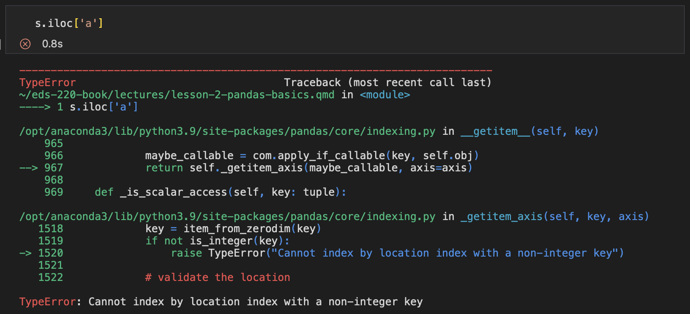

import pandas as pd
# we will also import numpy
import numpy as np2 Pandas Fundamentals
2.1 About
In this lesson we cover the two core objects in the pandas library the series and the data frame. We will also learn methods to subset, select, and add data to our data frames, as well as some basic plotting with matplotlib.
There is so much to learn about pandas. While we won’t be able to cover every single functionality of this package in the next three lecutres, the goal is to get you started with the basic tools for data wrangling and give you a solid basis on which you can explore further.
2.2 pandas
pandas is a Python package to wrangle and analyze tabular data. It is built on top of NumPy and has become the core tool for doing data analysis in Python.
The convention to import it is:
2.3 Series
The first core data structure of pandas is the series. A series is a one-dimensional array of indexed data. A pandas.Series having an index is the main difference between a pandas.Series and a numpy array. See the difference:
# a numpy array
# np.random.randn returns values from the std normal distribution
arr = np.random.randn(4)
print(type(arr))
print(arr, "\n")
# a pandas series made from the previous array
s = pd.Series(arr)
print(type(s))
print(s)<class 'numpy.ndarray'>
[-0.38948851 0.03689932 -0.97996969 1.35277789]
<class 'pandas.core.series.Series'>
0 -0.389489
1 0.036899
2 -0.979970
3 1.352778
dtype: float642.3.1 How to create a pandas.Series
The basic method to create a pandas.Series is to call
s = pd.Series(data, index=index)The data parameter can be:
{kind=link}
The index parameter is a list of index labels.
2.3.1.1 From a numpy array or list
To use this method we need to pass a numpy array (or a list of objects that can be converted to NumPy types) as data and a list of indices of the same length as data.
# a Series from a numpy array
pd.Series(np.arange(3), index=['a','b','c'])a 0
b 1
c 2
dtype: int64The index parameter is optional. If we don’t include it, the default is to make the index equal to [0,...,len(data)-1]. For example:
# a Series from a list of strings with default index
pd.Series(['EDS 220', 'EDS 222', 'EDS 223', 'EDS 242'])0 EDS 220
1 EDS 222
2 EDS 223
3 EDS 242
dtype: object2.3.1.2 From a dictionary
Remember a dictionary is a set of key-value pairs. If we create a pandas.Series via a dictionary the keys will become the index and the values the corresponding data.
# construct dictionary
d = {'a':0, 'b':1, 'c':2}
# initialize a sries using a dictionary
pd.Series(d)a 0
b 1
c 2
dtype: int642.3.1.3 From a number
If we only provide a number as the data for the series, we need to provide an index. The number will be repeated to match the length of the index.
pd.Series(3.0, index = ['A', 'B', 'C'])A 3.0
B 3.0
C 3.0
dtype: float642.3.2 Arithmetic Operations
Arithmetic operations work on series and also most NumPy functions. For example:
# define a series
s = pd.Series([98,73,65],index=['Andrea', 'Beth', 'Carolina'])
# divide each element in series by 10
print(s /10, '\n')
# take the exponential of each element in series
print(np.exp(s), '\n')
# notice this doesn't change the values of our series
print(s)Andrea 9.8
Beth 7.3
Carolina 6.5
dtype: float64
Andrea 3.637971e+42
Beth 5.052394e+31
Carolina 1.694889e+28
dtype: float64
Andrea 98
Beth 73
Carolina 65
dtype: int64There’s much more to say about pandas.Series, but this is enought to get us going. Mainly, we want to know about pandas.Series because they will be the columns of our pandas.DataFrame.
2.3.3 Attributes & Methods
pandas.Series have many attributes and methods, you can see a full list in the pandas documentation. For now we will cover two examples that have to do with identifying missing values.
pandas represents a missing or NA value with NaN, which stands for not a number. Sometime
2.3.4 Indexing
2.3.4.1 By label…
Indexing by label means we want to select data from our series using the label names in the series’ index. There are two ways of indexing by label:
2.3.4.1.1 … with []
We can use [] to acess specific values by label in the same way as we do in a dictionary: series['index_label']
# initalize series
s = pd.Series(np.arange(5), index=['a','b','c','d','e'])
print(s, '\n')
# access element corresponding to label 'b'
s['b']a 0
b 1
c 2
d 3
e 4
dtype: int64
12.3.4.1.2 … with loc
This will be our preferred method in the course. We can do a many things with it:
# access a specific element by label
s.loc['b']1# access a few elements by label
s.loc[['a','c','e']]a 0
c 2
e 4
dtype: int64# select based on True/False values
s.loc[s>3]e 4
dtype: int64# slice the series using the labels
s.loc['b':'d']b 1
c 2
d 3
dtype: int64
slicing with
loc
Notice that when use slicing with loc we get both the start and the end of the indices we indicated. This is different to slicing in numpy arrays or lists where we do not get the element at the end of the slice. Compare the following:
x = [0, 1, 2, 3, 4, 5, 6, 7, 8, 9]
print(x)
# slicing will return elements at indices 2 trhough 4 (inclusive)
x[2:5][0, 1, 2, 3, 4, 5, 6, 7, 8, 9][2, 3, 4]# define a np array with integers from 0 to 9
y = np.arange(10)
print(y)
# slicing will return elements at indices 2 trhough 4 (inclusive)
y[2:5][0 1 2 3 4 5 6 7 8 9]array([2, 3, 4]) z = pd.Series(y)
print(z)
# slicing will return elements with index labels 2 through 5 (inclusive)
z.loc[2:5]0 0
1 1
2 2
3 3
4 4
5 5
6 6
7 7
8 8
9 9
dtype: int642 2
3 3
4 4
5 5
dtype: int642.3.4.2 By position
Indexing by position means we want to select data from our series based on where it is within the series.
We can access a value by position using the iloc method. iloc stands for integer-location based indexing. This is the same kind of indexing we do in 1-dimensional numpy arrays or lists, where we use integers to access elements in the array and the index starts from 0.
# initialize series
s = pd.Series(np.arange(10,13), index=['a','b','c'])
print(s, '\n')
# access element at index 2 (third element in series)
s.iloc[2]a 10
b 11
c 12
dtype: int64
12If we try to use iloc with a label from our index we will get an error. Notice the TypeError: Cannot index by location with a non-integer key.

iloc vs. loc
At the beginning the difference between iloc and loc can be confusing. Remember the i in iloc stands for integer-location, so this function only uses integers to retrieve information from the series. Moreover, remember iloc indexing works in the same way as indexing for Python lists.
If you want to dive deeper, this is a great discussion about the difference between iloc and loc: Stackoverflow - How are iloc and loc different?
2.4 Data Frames
The Data Frame is the most used pandas object. It represents tabular data and we can think of it as a spreadhseet. Each column of a pandas.DataFrame is a pandas.Series.
2.4.1 Creating a pandas.DataFrame
There are many ways of creating a pandas.DataFrame. Although we likely won’t be creating data frames from scratch often, I’d like to go over creating a pandas.DataFrame from a dict of pandas.Series as this will help us understand the syntax for other Data Frame methods.
We already mentioned each column of a pandas.DataFrame is a pandas.Series. In fact, the pandas.DataFrame is a dictionary of pandas.Series, with each column name being the key and the column values being the key’s value. Thus, we can create a pandas.DataFrame in this way:
# initialize dictionary with columns' data
d = {'col_name_1' : pd.Series(np.arange(3)),
'col_name_2' : pd.Series([3.1, 3.2, 3.3]),
}
# create data frame
df = pd.DataFrame(d)
df| col_name_1 | col_name_2 | |
|---|---|---|
| 0 | 0 | 3.1 |
| 1 | 1 | 3.2 |
| 2 | 2 | 3.3 |
We can change the index and column names by changing the index and columns attributes in the data frame.
# print original index
print(df.index)
# change the index
df.index = ['a','b','c']
dfRangeIndex(start=0, stop=3, step=1)| col_name_1 | col_name_2 | |
|---|---|---|
| a | 0 | 3.1 |
| b | 1 | 3.2 |
| c | 2 | 3.3 |
# print original column names
print(df.columns)
# change column names
df.columns = ['C1','C2']
dfIndex(['col_name_1', 'col_name_2'], dtype='object')| C1 | C2 | |
|---|---|---|
| a | 0 | 3.1 |
| b | 1 | 3.2 |
| c | 2 | 3.3 |
2.5 Subsetting a pandas.DataFrame
Like it’s often the case when working with pandas, there are many ways in which we can subset a data frame. We will review the core methods to do this.
There are two ways to subset data in a Data Frame: by position and by label.
Subsetting by label means we want to select data from our data frame using the names of the columns or the index.
Subsetting by position means we want to select data from our data frame based on the data’s order in the data frame.
Let’s dive into some methods for subsetting which will clarify these options. For all examples we will use simplified data (glacial_loss.csv) from the National Snow and Ice Data Center (Dataset DOI:!). The column descriptions are:
- year: calendar year
- europe - antarctica: change in glacial volume (km3 ) in each region that year
- global_glacial_volume_change: cumulative global glacial volume change (km3), starting in 1961
- annual_sea_level_rise: annual rise in sea level (mm)
- cumulative_sea_level_rise: cumulative rise in sea level (mm) since 1961
# read in file
df = pd.read_csv('data/lesson-1/glacial_loss.csv')
# see the first five rows
df.head()| year | europe | arctic | alaska | asia | north_america | south_america | antarctica | global_glacial_volume_change | annual_sea_level_rise | cumulative_sea_level_rise | |
|---|---|---|---|---|---|---|---|---|---|---|---|
| 0 | 1961 | -5.128903 | -108.382987 | -18.721190 | -32.350759 | -14.359007 | -4.739367 | -35.116389 | -220.823515 | 0.610010 | 0.610010 |
| 1 | 1962 | 5.576282 | -173.252450 | -24.324790 | -4.675440 | -2.161842 | -13.694367 | -78.222887 | -514.269862 | 0.810625 | 1.420635 |
| 2 | 1963 | -10.123105 | -0.423751 | -2.047567 | -3.027298 | -27.535881 | 3.419633 | 3.765109 | -550.575640 | 0.100292 | 1.520927 |
| 3 | 1964 | -4.508358 | 20.070148 | 0.477800 | -18.675385 | -2.248286 | 20.732633 | 14.853096 | -519.589859 | -0.085596 | 1.435331 |
| 4 | 1965 | 10.629385 | 43.695389 | -0.115332 | -18.414602 | -19.398765 | 6.862102 | 22.793484 | -473.112003 | -0.128392 | 1.306939 |
First, we can get some baisc information about this data frame:
# print column names
print(df.columns)
# print shape: output is a tupe (# rows, # columns)
print(df.shape)Index(['year', 'europe', 'arctic', 'alaska', 'asia', 'north_america',
'south_america', 'antarctica', 'global_glacial_volume_change',
'annual_sea_level_rise', 'cumulative_sea_level_rise'],
dtype='object')
(43, 11)2.5.1 Selecting a single column…
2.5.1.1 …by label
This is the simplest case for selecting data. Remember we can think of a pandas.DataFrame as a dictionary of its columns? Then we can access a single column using the column name as the key, just like we would do in a dictionary:
I’m interested in the annual sea level rise.
# seelect a single column by using square brackets []
annual_rise = df['annual_sea_level_rise']
# check the type of the ouput
print(type(annual_rise))
annual_rise.head()<class 'pandas.core.series.Series'>0 0.610010
1 0.810625
2 0.100292
3 -0.085596
4 -0.128392
Name: annual_sea_level_rise, dtype: float64Since we only selected a single column the output is a pandas.Series.
We can also access a single column by using attribute syntax:
annual_rise_2 = df.annual_sea_level_rise
annual_rise_2.head()0 0.610010
1 0.810625
2 0.100292
3 -0.085596
4 -0.128392
Name: annual_sea_level_rise, dtype: float642.5.1.1.1 …by position
Suppose we want to access the 10th column in the data frame - then we want to select a column by position. In this case the 10th column is the annual sea level rise data and the 10th position corresponds to the index 9. We can select this column by position using the iloc method*:
# select column by position using iloc
# the syntax is iloc[rows,columns]
# [:,9] means "select all rows from the 10th column"
annual_rise_3 = df.iloc[:,9]
annual_rise_3.head()0 0.610010
1 0.810625
2 0.100292
3 -0.085596
4 -0.128392
Name: annual_sea_level_rise, dtype: float64
Do not do that!
Unless you are really looking for information about the 10th column, do not access a column by position. This is bound to break in many ways:
it relies on a person correctly counting the position of a column. Even with a small dataset this can be prone to error.
it is not explicit: if we wnat information about sea level rise
df.annual_sea_level_riseordf['annual_sea_level_rise']are explicitely telling us we are accessing that information.df.iloc[:,9]is obscure and uninformative.datastets can get updated. Maybe a new column was added before
annual_sea_level_rise, this would change the position of the column, which would make any code depnding ondf.iloc[:,9]invalid. Accessing by label helps reproducibility!
2.5.2 Selecting multiple columns…
2.5.2.1 … using a list of column names
2.5.2.2 … using a slice
2.5.2.3 … using a condition
2.5.3 Selecting rows
2.5.3.1 … by label
2.5.3.2 … by position
2.5.3.3 … using a condition
2.6 Basic Matplotlib
2.7 Resources
📖 Pandas documentation - User Guide
📖 Python for Data Analysis, 3E - Getting started with pandas
CONTINUE: https://pandas.pydata.org/docs/user_guide/dsintro.html https://pandas.pydata.org/docs/getting_started/intro_tutorials/03_subset_data.html https://wesmckinney.com/book/pandas-basics https://pandas.pydata.org/docs/user_guide/indexing.html#selection-by-label https://earth-env-data-science.github.io/lectures/pandas/basic_pandas.html